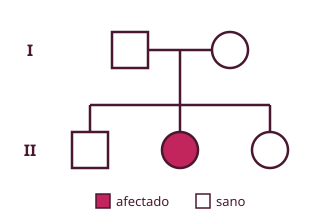

Enfermedades monogénicas: la alteración de un único gen provoca, con probabilidad muy alta (casi nunca del 100 %), la enfermedad. Siguen la herencia mendeliana (Gregor Mendel, padre de la genética, por sus cruces de guisantes).
| Término | Significado |
|---|---|
| Gen | Segmento de ADN: unidad de información y de herencia (ej.: OCA2, color de ojos) |
| Genotipo / fenotipo | Información genética / caracteres visibles (resultado del genotipo y del medio) |
| Alelo normal / variante | A (wild type, sin alteración) / a (alterado) |
| Término | Significado |
|---|---|
| Alelo | Cada una de las versiones de un gen |
| Homocigoto | Dos alelos iguales para un gen |
| Heterocigoto | Dos alelos distintos |
| Hemicigoto | Una sola copia: los varones para los genes del cromosoma X |
| Dominante / recesivo | Dominante: basta un alelo para que se exprese. Recesivo: hacen falta dos |
| Patrón | Cómo reconocerlo | Ejemplos |
|---|---|---|
| Autosómica dominante | Basta un alelo: los heterocigotos están afectados. Aparece en todas las generaciones (vertical). Un progenitor afectado → 50 % de riesgo | Acondroplasia, braquidactilia, poliquistosis renal, neurofibromatosis, síndrome de Treacher Collins |
| Autosómica recesiva | Hacen falta dos alelos. Padres sanos portadores con hijos afectados (horizontal). 25 % de riesgo | Fibrosis quística, albinismo, galactosemia, fenilcetonuria, Tay-Sachs, hemocromatosis |
| Recesiva ligada al X | Afecta casi solo a varones; las mujeres con una X alterada son portadoras. No hay transmisión padre → hijo | Hemofilias, daltonismo, distrofia de Duchenne/Becker |
| Dominante ligada al X | Varones hemicigotos y mujeres heterocigotas, afectados. Padre afectado → todas sus hijas afectadas, ningún hijo | Raquitismo hipofosfatémico (resistente a vitamina D), síndrome de Rett, déficit de ornitín-transcarbamilasa |
| Mitocondrial | Solo la transmite la madre, a todos sus hijos (tema 15) | — |

Si unos padres sanos tienen una hija afectada, no puede ser recesiva ligada al X: para que una hija esté afectada, el padre tendría que estar afectado. Por tanto es autosómica recesiva.
En la dominante ligada al X, el padre pasa su único X a todas sus hijas y el Y a sus hijos.
Aumenta la absorción intestinal de hierro desde el nacimiento: se acumula en hígado, páncreas y corazón (cirrosis, problemas cardiovasculares). Hierro total: normal 2-4 g; afectados 20-40 g. Es autosómica recesiva (gen en la región HLA del cromosoma 6) y afecta a ambos sexos por igual, pero se manifiesta unas 4 veces más en hombres porque las mujeres pierden hierro con la menstruación. Se trata con sangrías o donaciones periódicas.
Penetrancia = ¿SÍ o NO? (cuántos enferman). Expresividad = ¿CUÁNTO? (cómo de grave).
Riesgo empírico: riesgo observado directamente en un grupo cuando no se conocen los genes implicados. Ej.: sin familiares afectados, 0,1 %; con un hermano afectado, 3 %.
Ejemplo: 6 % / 2 % = λ = 3. Si λ > 1 hay agregación familiar. Para separar lo genético de lo ambiental se usan estudios de gemelos monocigóticos (comparten el 100 % del ADN; los mellizos son dicigóticos) y de adoptados.
Síndrome de Treacher Collins (autosómico dominante, gen TCOF1, 5q32): fisuras palpebrales oblicuas hacia abajo, coloboma, falta de pestañas inferiores, hipoplasia malar y mandibular, paladar hendido, deformidades de las orejas y sordera. Codominancia: los dos alelos se expresan a la vez (grupo sanguíneo AB). Símbolos del árbol genealógico: cuadrado = varón, círculo = mujer, relleno = afectado, punto central = portador; las generaciones se numeran con números romanos (I, II, III).